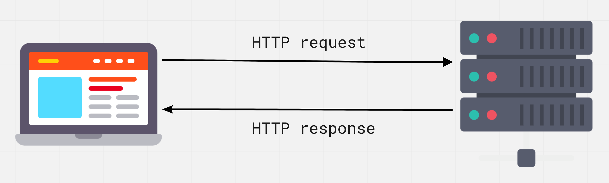

Zanim użytkownik zobaczy na ekranie zawartość strony, przeglądarka wysyła do serwera żądanie otrzymania tej właśnie treści. Plik HTML, obrazy, style i skrypty pochodzą z serwera za pośrednictwem protokołu HTTP - zestawu reguł i konwencji wykorzystywanych podczas przesyłania danych przez sieć.

HyperText Transfer Protocol (protokół przesyłania hipertekstu) jest szeroko rozpowszechnionym protokołem przesyłania różnych typów zasobów internetowych: html, css, javascript, obrazów, audio i wideo itp.
HTTP bazuje na strukturze klient-serwer oraz modelu żądanie-odpowiedź, w którym aplikacja kliencka inicjuje połączenie, tworzy żądanie i wysyła je do serwera, po czym serwer przetwarza to żądanie, generuje odpowiedź i odsyła ją do klienta. Komunikacja między nimi odbywa się poprzez szereg naprzemiennych żądań HTTP i odpowiedzi HTTP.
Żądanie odbywa się w kilku etapach:
HyperText Transfer Protocol Secure to dodatek do protokołu HTTP, w którym wszystkie wiadomości między klientem a serwerem są szyfrowane w celu zwiększenia bezpieczeństwa. Zapewnia ochronę przed atakami podsłuchowymi. Dane są przesyłane protokołami kryptograficznymi SSL lub TLS.

Podczas komunikacji przez zwykłe połączenie HTTP wszystkie dane są przesyłane w postaci tekstu i mogą być odczytane przez każdego, kto uzyskał dostęp do połączenia między klientem a serwerem. Jeśli użytkownicy robią zakupy online i wypełniają formularz zamówienia zawierający informacje o karcie kredytowej, ich dane finansowe są znacznie łatwiejsze do kradzieży, jeśli są przesyłane jako tekst. Dzięki HTTPS dane zostaną zaszyfrowane i haker nie będzie mógł ich odszyfrować, ponieważ odszyfrowanie wymaga dostępu do klucza prywatnego przechowywanego na serwerze.
Protokół HTTPS zapewnia, że informacje o klientach, takie jak numery kart kredytowych, są szyfrowane i nie można ich przechwycić w formie odszyfrowanej. Odwiedzający mogą potwierdzić, że strona jest bezpieczna, patrząc na ikonę po lewej stronie paska adresu, zabezpieczone połączenia są oznaczone ikoną kłódki.
C:\>tracert